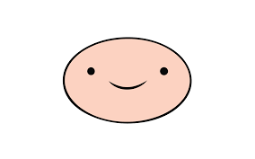
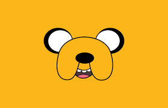
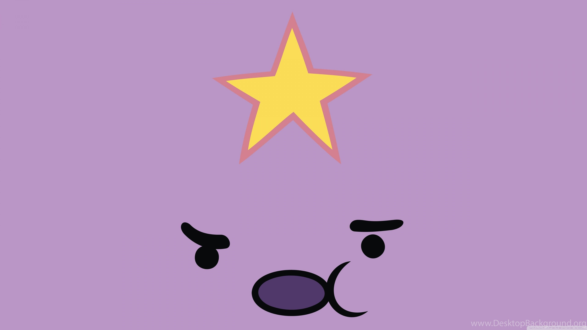

Pin And Jake Adventure Time
돌아가기!

캐릭터 소개
주인공
핀(Pinn)

제이크(Jake)

- 핀의 절친으로 나무집에서 함께 생활 중이다.
- 몸이 늘어난다는 설정을 가지고 있지만 늘어나는 것에 한계가 있다.
비모(Bimo)
- 나무집에서 함께 살고있는 'moo'회사의 상품 중 하나인 비모(Bimo)
- 건전지로 배터리를 충전 및 유지
공주
버블검 공주(princess bubblegum)

마르셀린(Marceline)

- 오래되고 돈독한 친구사이로 같이 있는 모습이 많이 나온다.
- 페퍼민트 버틀러 - 버블검이 처음으로 만든 캔디왕국의 시민.
- 레몬 그랩(lemon) - 이름그대로 , 캔디왕국의 주인인 버블검의 자리를 탐낸다.
불꽃 공주(fire princess)
덩어리 공주(lumpy space princess)

- 덩어리 행성의 공주
- 성격이 유별나서 주변을 짜증나게 하지만 우랜드를 구하는데 중요한 역할을 한다.
빌런
아이스킹(Ice King)
- 권터 - 함께 생활하는 펭귄들 중 한 마리로 따로 에피소드가 제작된 바가 있다.
- 베티 - 아이스킹이 왕관을 쓰기 전 함께 했었던 연인으로 아이스킹을 원래데로 만들기 위해 노력한다.
매직맨
관련인물
마르셀린
WOO랜드 소개
애니메이션 배경
제작사
CARTTON NATWORK
cartton network